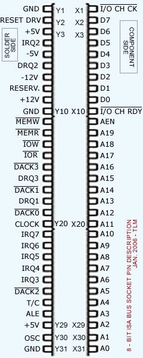
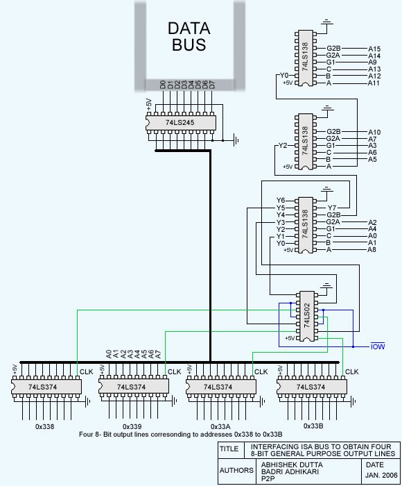
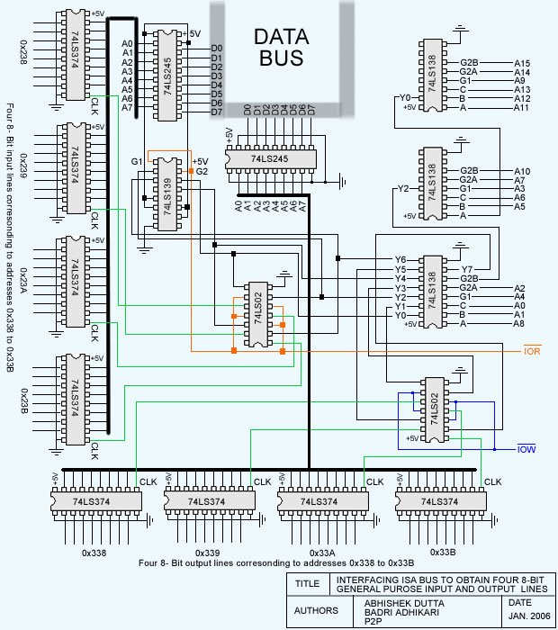
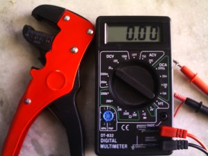
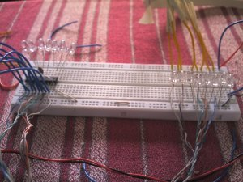
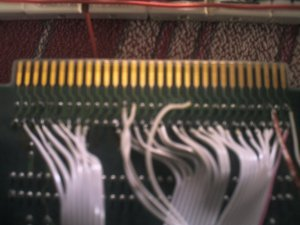

Interfacing with the ISA Bus
Abstract: The parallel port is a very popular choice for interfacing. Although there are 8 data output lines as well as the CONTROL and STATUS pins of the parallel port, this is often not sufficient for some complex projects, which require more data I/O lines. This project shows how to get 32 general purpose I/O lines by interfacing with the ISA Bus. Though the PCI bus can be a candidate for interfacing experiments, its greater speed and feature-rich nature present great complexity in terms of hardware and software to beginners. This project can be a stepping stone to those thinking of ultimately getting to the PCI Bus for interfacing experiments. It can also be useful for those thinking of making a Digital Oscilloscope using a PC, A/D and D/A converters, a Microcontroller programmer, etc.
First, let's get familiar with the ISA connector:
Pin Description
We have designated as X(n) the side that contains components on all standard ISA cards. Similarly, Y(n) is the side that contains the solder. It is very important for you to be clear on the above convention: you will damage your motherboard if you mistake one for the other.
The description for most commonly used pins are given below:
SIDE X
- D0 - D7 (pins X2 to X9)
- These are the 8 data lines representing the 8-bit data bus.
- A0 - A19 (pins X31 to X12)
- These are the 20 address lines that contain the address bits. This bus can address 1MB (2^20=1048576 bytes)
- AEN (pin X11)
- It is used by the DMA controller to take over to data and address bus during DMA transfer.
Side Y
- GND (pins Y1,Y10,Y31)
- They are connected to ground of computer.
- +5V (pin Y3)
- +5 Volt DC output
- -5V (pin Y5)
- -5 Volt DC output
- +12V (pin Y9)
- +12 Volt DC output
- -12V (pin Y7)
- -12 Volt DC output
- MEMW(pin Y11)*
- The microprocessor makes this line LOW while doing WRITE TO MEMORY.
- MEMR (pin Y12)*
- The microprocessor makes this line LOW while doing READ FROM MEMORY.
- IOW (pin Y13)
- The microprocessor makes this line LOW while doing WRITE TO PORT. (eg: when you write outportb(ADDRESS,BYTE), this line becomes LOW)
- IOR (pin Y14)
- The microprocessor makes this line LOW while doing READ FROM PORT. (eg: when you write byte = inportb(ADDRESS), this line becomes LOW)
- DACK0 - DACK3 (pins Y19,Y17,Y26,Y15)*
- The DMA controller signals on these lines to let devices know that that DMA has the control of buses.
- DRQ1 - DRQ3 (pins Y18,Y6,Y16)*
- These pins allows the peripheral boards to request the use of the buses.
- T/C (pin Y27)*
- The DMA controller sets this signal to let the peripheral know that the programmed number of bytes has been sent.
- IRQ2 - IRQ7 (pins Y4,Y25,Y24,Y23,Y22,Y21)*
- Interrupt Signals. The peripheral devices set these signals to request the attention of the microprocessor.
- ALE (pin Y28)*
- Address Latch Enable. This signal is used by the microprocessor to lock the 16 lower address bus in a latch during a memory or port input/output operation.
- CLOCK (pin Y20)*
- The system clock
- OSC (pin Y30)*
- It is a high frequency clock which can be used for the I/O boards.
* these pins will not be used in this project
Getting Four Output lines out of an ISA Bus
Before going into the details of the full project let's examine the part that handles the four 8-bit output lines. The addresses in the range 0x338 to 0x33B were not in use by any devices for input/output operations in our computer.
The three 74LS138 ICs handle the address decoding. We configured the circuit to produce a short pulse on the CLOCK line (represented by green lines on the schematic) whenever an address in the range 0x338 to 0x33B and port output (IOW) is requested.
Whenever the 74LS374 gets a CLOCK pulse it latches in the 8-bit data present in the data bus. 74LS245 is a 3-state Octal Bus Transceiver. It reduces DC loading by isolating the data bus from external loads.
[ This is true, at least in theory. Don't use the output to power your favorite toaster oven, and avoid shorting it to Vss or Vcc; anything other than an optocoupler may not isolate quite as well as the manufacturer promises, and IC shrapnel is difficult to pick out of the ceiling. -- Ben ]
To figure out which I/O port addresses are available for use in this project, we examined the contents of ioports in the /proc directory of our Linux system:
[root@thelinuxmaniac~]# cat /proc/ioports 0000-001f: dma1 0020-0021: pic1 0040-0043: timer0 ....................... ....................... 01f0-01f7: ide0 0378-037a : parport0 037b-037f : parport0 03c0-03df : vga+ ....................... .......................
It is clear from the above output that the addresses 0x238-0x23B and 0x338-0x33B are not being used by any device. This is often the case in most computers. However, if this address is occupied by some device, then you have to change the wiring of address lines to the three 74LS138 ICs. We'll describe the address decoding technique briefly so that you can set up available addresses for the I/O device you are trying to build.
Address Decoding
We used the 74LS138 3-to-8 multiplexer for address decoding. Suppose we want to assign the addresses 0x338-0x33B for four 8-bit output lines and 0x238-0x23B for four 8-bit input lines.The binary equivalent of these addresses are:
| Address | ||||||||||||||||
| 0x338 | 0 | 0 | 0 | 0 | 0 | 0 | 1 | 1 | 0 | 0 | 1 | 1 | 1 | 0 | 0 | 0 |
| 0x339 | 0 | 0 | 0 | 0 | 0 | 0 | 1 | 1 | 0 | 0 | 1 | 1 | 1 | 0 | 0 | 1 |
| 0x33A | 0 | 0 | 0 | 0 | 0 | 0 | 1 | 1 | 0 | 0 | 1 | 1 | 1 | 0 | 1 | 0 |
| 0x33B | 0 | 0 | 0 | 0 | 0 | 0 | 1 | 1 | 0 | 0 | 1 | 1 | 1 | 0 | 1 | 1 |
| 0x238 | 0 | 0 | 0 | 0 | 0 | 0 | 1 | 0 | 0 | 0 | 1 | 1 | 1 | 0 | 0 | 0 |
| 0x239 | 0 | 0 | 0 | 0 | 0 | 0 | 1 | 0 | 0 | 0 | 1 | 1 | 1 | 0 | 0 | 1 |
| 0x23A | 0 | 0 | 0 | 0 | 0 | 0 | 1 | 0 | 0 | 0 | 1 | 1 | 1 | 0 | 1 | 0 |
| 0x23B | 0 | 0 | 0 | 0 | 0 | 0 | 1 | 0 | 0 | 0 | 1 | 1 | 1 | 0 | 1 | 1 |
| Address Lines | A15 | A14 | A13 | A12 | A11 | A10 | A9 | A8 | A7 | A6 | A5 | A4 | A3 | A2 | A1 | A0 |
The only address lines that change for any of the eight addresses are A8, A1, and A0 (the whole process of connecting wires to 74LS138 IC is like solving a puzzle!) Connect the remaining wires to the two 74LS138s so that they produce a low output when these lines have the address bits that partially match our addresses. Now, connect the above three lines to the third 74LS138. All 8 outputs of this IC are used to select the 74LS374 latches corresponding to input and output addresses after it is NORed with IOR and IOW; we used the 74LS02 to distinguish between memory IO and port IO addressing.
| 74LS138 Truth Table | ||||||||||||
| G1 | G2 | C | B | A | Y0 | Y1 | Y2 | Y3 | Y4 | Y5 | Y6 | Y7 |
| X | H | X | X | X | H | H | H | H | H | H | H | H |
| L | X | X | X | X | H | H | H | H | H | H | H | H |
| H | L | L | L | L | L | H | H | H | H | H | H | H |
| H | L | L | L | H | H | L | H | H | H | H | H | H |
| H | L | L | H | L | H | H | L | H | H | H | H | H |
| H | L | L | H | H | H | H | H | L | H | H | H | H |
| H | L | H | L | L | H | H | H | H | L | H | H | H |
| H | L | H | L | H | H | H | H | H | H | L | H | H |
| H | L | H | H | L | H | H | H | H | H | H | L | H |
| H | L | H | H | H | H | H | H | H | H | H | H | L |
| Refer to the 74LS138 datasheet for details | ||||||||||||
The Real Stuff
Now, finally, we are ready to describe the functioning of the complete circuit.
Description of the ICs used in this project
- 74LS138 and 74LS139
- Decoders/de-multiplexers; used for address decoding
- 74LS245
- Octal 3-state Buffer/Line Driver/Line Receiver
- 74LS374
- Octal Transparent Latch with 3-state outputs; octal D-type flip-flop with 3-state output
- 74LS02
- Quad 2-input NOR gate
The three 74LS138 IC are used for address decoding along with the two 74LS02s (2-input NOR gate.) Whenever a match is found in the address lines, the respective output line, Y(x) of the third 74LS138 IC (connected to the two 74LS02 IC), goes LOW. These lines along with IOW (and IOR) are connected to the NOR gates (74LS02), which produces a HIGH only when the two inputs go LOW simultaneously.
Hence, the output is high only when:
- a match is found in the address lines
- the IOW or IOR lines go LOW, representing the PORT IO operation.
Remember, if we do not consider the second case, our device will conflict with the memory IO operations in the addresses 0x238-0x23B and 0x338-0x33B.
We can see in the circuit diagram that the output lines of NOR gates are connected to the CLOCK pins of the 74LS374 latch. So, whenever the above two cases match simultaneously, the CLOCK pulse is sent to the respective latch and the data that is present on the data bus at that moment is latched in.
Coding - controlling the I/O lines using C
isa.c illustrates the some simple coding methods to control and test the I/O lines of the device created in this project.
if(ioperm(OUTPUT_PORT,LENGTH+1,1))
{
...
}
if(ioperm(INPUT_PORT,LENGTH+1,1))
{
...
}
outb(data,port);
data = inb(port);
ioperm() gets the permission to access the specified ports from the kernel; outb() and inb() functions (defined in sys/io.h) read from and write to the specified port.
Some Debugging Techniques
It is not easy to get a complex project to work just by reading an article like this. At some point you will need to debug your hardware. Hopefully, these debugging techniques will help you (as they have helped us - a lot!) to find the problem in your work. You will need a multimeter and some LEDs. What we learned while debugging is that LEDs are the best way to debug hardware of this nature when you don't have sophisticated debugging instruments. Some important techniques we discovered:
  - Use of Multimeter
- A multimeter will be very useful to check the zeros and ones coming across ICs. Verify that expected output is coming at every IC. ZERO will be measured as 0.8V and ONE will be measured as 3.8V (this will vary with computer). This can be used if the address decoding does not work, or when unexpected data is seen on the output lines. DO NOT CONNECT THE MULTIMETER PROBES DIRECTLY TO DATA BUS OR THE ADDRESS LINES. ALWAYS CONNECT IT TO THE OUTPUT OF THE RESPECTIVE ICS!
- Use of LEDs
- LEDs can be very useful to verify the data bits coming from the output
lines; the lighting up of LED will be visible across latches. To check
whether the clock pulse is going to the right latch, connect an LED to
the CLK pin and send data to that port in a continuous loop, like this:
while(1){ outb(0x80,0x338); }
There are lots of other debugging techniques which you will probably discover by yourself when you run into problems. Try to ensure that the wiring at the connector that goes into the ISA slot is correct. We checked every part of the device (every IC, all those jumper wires, etc.) and after debugging for about a week we found that IOW and IOR wires were connected to the wrong pins in the ISA slot. So, recheck the wiring. Fortunately, we did not mistake the 12V pin for a 5V pin! ;)
The photo of the device that we constructed is here.
You can get more details and photos related to this project at http://www.myjavaserver.com/~thelinuxmaniac/isa
Talkback: Discuss this article with The Answer Gang
![[BIO]](../gx/2002/note.png)
I am studying Computer Engineering at the Institute of Engineering, Pulchowk Campus (NEPAL). I love to program in the Linux Environment. I like coding in C, C++, Java and Web Site Designing (but not always). I like participating in online programming contests like that at topcoder.com. My interests keep on changing and I love reading books on programming, murder mysteries (Sherlock Holmes, Agatha Christie, ...) and watching movies.

{kind=link}